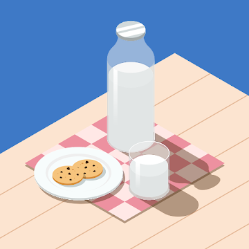

シスターフッドを描いた感動的な物語から、ド派手なアクションシーンが魅力の映画、ゾンビパンデミック作品など幅広いジャンルの映画が好きです。
夏になると野外で映画を見られるイベントが各地で開催されるので今年もたくさん参加したいです。
鶏肉は煮ても、焼いても、揚げても、おいしいですよね。基本的にお肉は何でも好きですが特に鶏料理が好きみたいです。
料理を練習して最高のチキン南蛮を作れるようになりたいです。
犬はデカければデカいほどいいということで、大型犬が好きです。いつか常識では考えられないほどデカい犬を飼いたいです。
夕方に街を散歩するといろいろな種類の犬がいっぱい無料で見られてたのしいですよ。